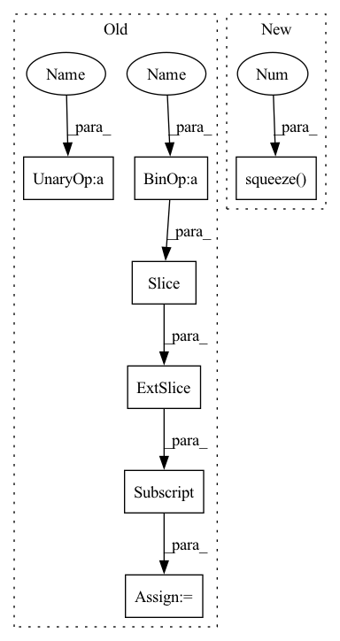

Pattern ID :21787
Before Change
def validation_step(self, batch, batch_idx):
t, series, mu = batch
S, L = self.backcast_len, self.forecast_len
T = S + L
series = series.squeeze(-1)[:, :T]
// series.shape == [batch_size, total_len]
X = series[:, :S]
y = series[:, -L:]
_, preds = self.model(X)
mse = F.mse_loss(preds, y, reduction="mean")
self.log("train_mse", mse)
if batch_idx == 0:
for i in range(self.n_plots):
plot_deterministic_forecasts(
self.logger.experiment, i, t[i], mu[i], t[i, :S],
X[i], t[i, -L :], y[i], preds[i])
def configure_optimizers(self):
opt = torch.optim.Adam(self.parameters())After Change
def validation_step(self, batch, batch_idx):
t, mu, t_x, x, t_y, y = batch
x = x.squeeze(-1)
y = y.squeeze(-1 )
// x.shape == [batch_size, backcast_len]
_, preds = self.model(x)
mse = F.mse_loss(preds, y, reduction="mean")In pattern: SUPERPATTERN
Frequency: 3
Non-data size: 7
Instances Fragment ID: 69417906
Project Name: alasdairtran/fourierflow
Commit Name: 875725b2af6801539f18eeb2a9efb97bfce424bc
Time: 2021-03-30
Author: alasdair.tran@gmail.com
File Name: rivernet/systems/forecaster_nbeats.py
M Class Name: NBEATSForecaster
N Class Name: NBEATSForecaster
M Method Name: validation_step(3)
N Method Name: validation_step(3)
M Parent Class: System
N Parent Class: System
M File Name: rivernet/systems/forecaster_nbeats.py
N File Name: rivernet/systems/forecaster_nbeats.py
M Start Line: 38
M End Line: 55
N Start Line: 32
N End Line: 45
Before Change
def validation_step(self, batch, batch_idx):
t, series, mu = batch
S, L = self.backcast_len, self.forecast_len
T = S + L
series = series.squeeze(-1)[:, :T]
// series.shape == [batch_size, total_len]
X = series[:, :S]
y = series[:, -L:]
_, preds = self.model(X)
mse = F.mse_loss(preds, y, reduction="mean")
self.log("train_mse", mse)
if batch_idx == 0:
for i in range(self.n_plots):
plot_deterministic_forecasts(
self.logger.experiment, i, t[i], mu[i], t[i, :S],
X[i], t[i, -L :], y[i], preds[i])
def configure_optimizers(self):
opt = torch.optim.Adam(self.parameters())After Change
def validation_step(self, batch, batch_idx):
t, mu, t_x, x, t_y, y = batch
x = x.squeeze(-1 )
y = y.squeeze(-1)
// x.shape == [batch_size, backcast_len]
_, preds = self.model(x) Fragment ID: 69417921
Project Name: alasdairtran/fourierflow
Commit Name: 875725b2af6801539f18eeb2a9efb97bfce424bc
Time: 2021-03-30
Author: alasdair.tran@gmail.com
File Name: rivernet/systems/forecaster_nbeats.py
M Class Name: NBEATSForecaster
N Class Name: NBEATSForecaster
M Method Name: validation_step(3)
N Method Name: validation_step(3)
M Parent Class: System
N Parent Class: System
M File Name: rivernet/systems/forecaster_nbeats.py
N File Name: rivernet/systems/forecaster_nbeats.py
M Start Line: 38
M End Line: 55
N Start Line: 32
N End Line: 45
Before Change
for i in range(1, num + 1):
start = piece_length * (i - 1)
end = piece_length * i
piece = spec[:, start:end]
if i == num:
piece = spec[:, start:]
freq(piece)
time(piece)
After Change
to_be_masked = torch.stack(list(chunks[:-1]), dim=0).unsqueeze(1)
time_mask(to_be_masked)
freq_mask(to_be_masked)
masked = to_be_masked.squeeze(1 ) .permute(1, 0, 2).reshape((spec.shape[0], -1))
return torch.cat([masked, chunks[-1]], dim=1)
Fragment ID: 69417904
Project Name: ivankunyankin/quartznet-asr
Commit Name: 28f999e7cfbefb66c9545f32e76a7454a7432aac
Time: 2021-07-01
Author: IKunyankin@gmail.com
File Name: utils.py
M Class Name: AnonimousClass
N Class Name: AnonimousClass
M Method Name: augment(4)
N Method Name: augment(4)
M Parent Class:
N Parent Class:
M File Name: utils.py
N File Name: utils.py
M Start Line: 57
M End Line: 82
N Start Line: 57
N End Line: 74
Before Change
def training_step(self, batch, batch_idx):
_, series, _ = batch
S, L = self.backcast_len, self.forecast_len
T = S + L
series = series.squeeze(-1)[:, :T]
// series.shape == [batch_size, total_len]
X = series[:, :S]
y = series[:, -L :]
_, preds = self.model(X)
mse = F.mse_loss(preds, y, reduction="mean")After Change
def training_step(self, batch, batch_idx):
_, _, _, x, _, y = batch
x = x.squeeze(-1)
y = y.squeeze(-1 )
// x.shape == [batch_size, backcast_len]
_, preds = self.model(x)
mse = F.mse_loss(preds, y, reduction="mean") Fragment ID: 69417919
Project Name: alasdairtran/fourierflow
Commit Name: 875725b2af6801539f18eeb2a9efb97bfce424bc
Time: 2021-03-30
Author: alasdair.tran@gmail.com
File Name: rivernet/systems/forecaster_nbeats.py
M Class Name: NBEATSForecaster
N Class Name: NBEATSForecaster
M Method Name: training_step(3)
N Method Name: training_step(3)
M Parent Class: System
N Parent Class: System
M File Name: rivernet/systems/forecaster_nbeats.py
N File Name: rivernet/systems/forecaster_nbeats.py
M Start Line: 22
M End Line: 29
N Start Line: 20
N End Line: 22